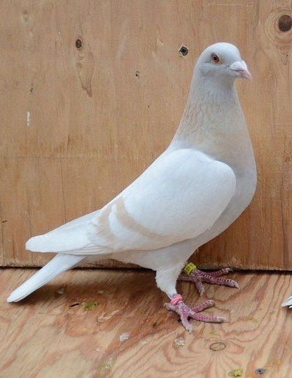

PIGEON
Pigeons and doves constitute the animal family Columbidae and the order Columbiformes, which includes about 42 genera and 310 species. The related word "columbine" refers to pigeons and doves. They are stout-bodied birds with short necks, and short slender bills that in some species feature fleshy ceres. They primarily feed on seeds, fruits, and plants. This family occurs worldwide, but the greatest variety is in the Indomalaya and Australasia ecozones. Pigeons and doves are likely the most common birds in the world.
